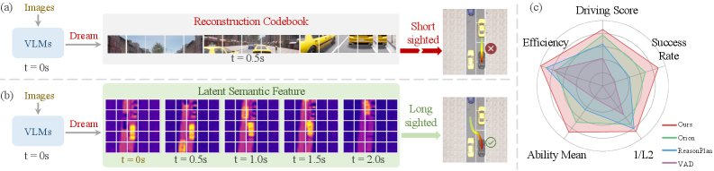

ICML 2026
ICML 2026
DeepSight: Long-Horizon World Modeling via Latent States Prediction for End-to-End Autonomous Driving
We propose a driving world model that performs parallel prediction of latent semantic features for consecutive future frames in the bird's-eye-view (BEV) space, enabling long-horizon modeling of future world states. We further introduce an efficient, adaptive text-reasoning mechanism that injects social knowledge for challenging long-tail driving scenarios, achieving state-of-the-art results on the closed-loop Bench2Drive benchmark.